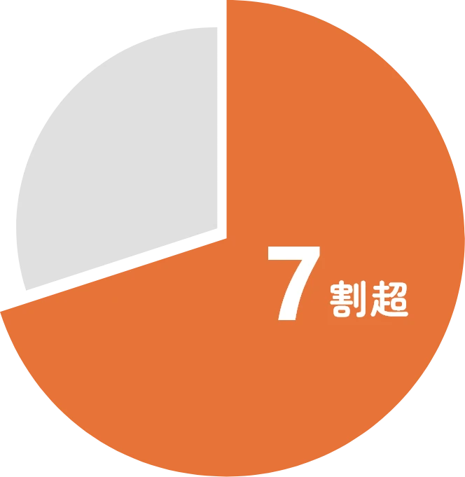

NUMBERS 数字で見る酪農とちぎ
数字から知る、酪農とちぎの魅力
「酪農とちぎってどんなところ？」そんな疑問にお答えするために、私たちを数字で表してみました。
生乳の取扱量、働く職員の特徴など、データから見えてくるのは地域に根ざした私たちの実像です。
数字を通して、酪農とちぎの今とこれからを知っていただければ幸いです。
栃木の酪農について
※令和6年政府統計
乳牛飼養頭数
52,800頭
県民36人に対し
牛1頭の割合！
年間乳量
350,055t
日本屈指の酪農県！
生乳生産量
全国2位
栃木県は、北海道に次いで全国トップクラス！生乳は牛乳やヨーグルト、アイスクリームなどに姿を変え、親しまれています。
酪農とちぎについて
県内年間乳量シェア率

酪農とちぎでは、栃木県全体の約7割の生乳を生産しています。多くの生産者の皆さんの努力と地域の支えがあってこそ、安定した生乳をお届けできています。
組合創立
24年
設立日は平成13年8月1日。
事業総収益
469億円
地域とともに築いた実績！
組合乳牛
飼養頭数
37,641頭
県内トップの頭数！
1戸当たり
飼養頭数
130頭
丁寧な管理を
両立する規模。
組合年間乳量
253,433t
牛乳パックで計算するとおおよそ2億5千万本分！
正職員について
正職員数
60名
職員総数77名。6つの主な業務を通じて、地域の酪農を支えています。
平均勤続
17.8年
続けやすい職場です。
海外研修経験者
33名
半数以上が研修経験あり！
平均年齢
43.0歳
若手もどんどん活躍中！
職員男女比
2 : 1
性別に関係なく、
適材適所で力を発揮。